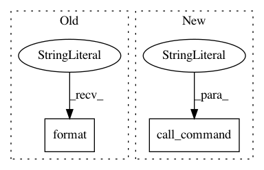

9994a22f16fe4db18d29eb1e998b678804676ef2,server/website/website/management/commands/resetwebsite.py,Command,reset_website,#Command#,25
Before Change
user = DATABASES["default"]["USER"]
passwd = DATABASES["default"]["PASSWORD"]
name = DATABASES["default"]["NAME"]
local("mysql -u {} -p{} -N -B -e \"DROP DATABASE IF EXISTS {}\"".format(
user, passwd, name))
local("mysql -u {} -p{} -N -B -e \"CREATE DATABASE {}\"".format(
user, passwd, name))
After Change
self.call_db_command("CREATE DATABASE {}".format(dbname))
// Reinitialize the website
call_command("makemigrations", "website")
call_command("migrate")
call_command("startcelery")
def handle(self, *args, **options):
In pattern: SUPERPATTERN
Frequency: 3
Non-data size: 2
Instances
Project Name: cmu-db/ottertune
Commit Name: 9994a22f16fe4db18d29eb1e998b678804676ef2
Time: 2019-11-26
Author: dvanaken@cs.cmu.edu
File Name: server/website/website/management/commands/resetwebsite.py
Class Name: Command
Method Name: reset_website
Project Name: cmu-db/ottertune
Commit Name: 9994a22f16fe4db18d29eb1e998b678804676ef2
Time: 2019-11-26
Author: dvanaken@cs.cmu.edu
File Name: server/website/website/management/commands/resetwebsite.py
Class Name: Command
Method Name: handle
Project Name: cmu-db/ottertune
Commit Name: 6bf50b892d795bf88991020f554c1754e403f4df
Time: 2020-01-14
Author: dvanaken@cs.cmu.edu
File Name: server/website/website/management/commands/resetwebsite.py
Class Name: Command
Method Name: handle